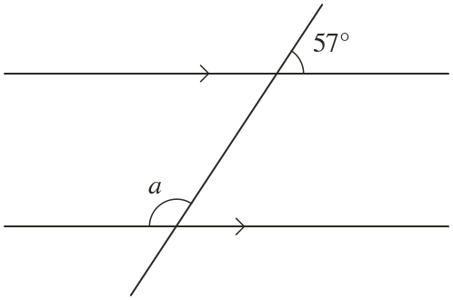
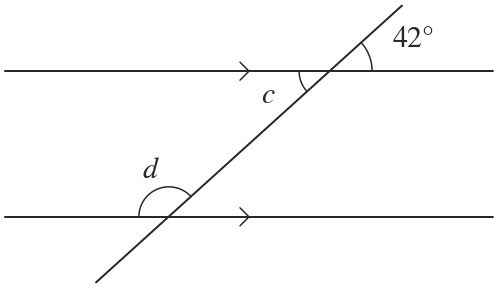
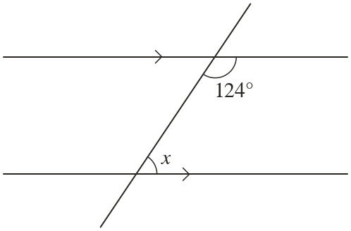
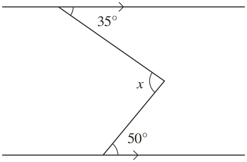

Westonbirt Maths · Parallel Lines and Quadrilaterals
Angles in Parallel Lines
Name: ______________________ Date: ____________
1
Find a, giving both reasons.

2
Find and d, giving a reason for each.

3
Tom says because the angles are alternate. Explain his mistake and find

4
Two parallel lines are crossed by a transversal. Two alternate angles are and Find
Ext
Find (Hint: draw a third parallel line through the bend.)
